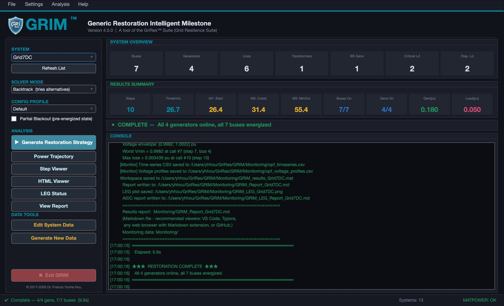

GRIM 4.0.0
From blackout to full service, step by step, with every step proven feasible in the AC network. Version 4.0.0 (November 15, 2026) plans the restoration of grids with AI data centers.

GRIM (Generic Restoration Intelligent Milestone) is a tool of the GriRes Suite. It is free and open source under GPL-3.0.
- Source code on GitHub
- Release 4.0.0, with the 96-page manual